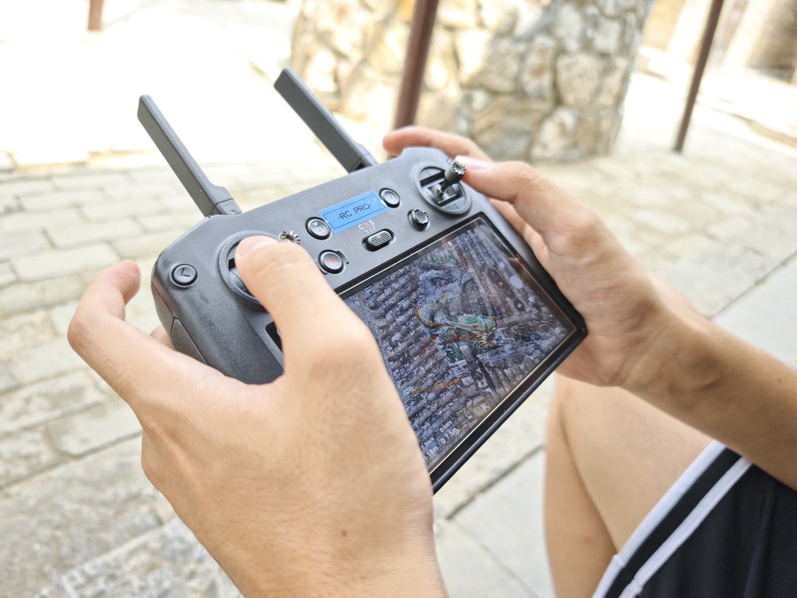
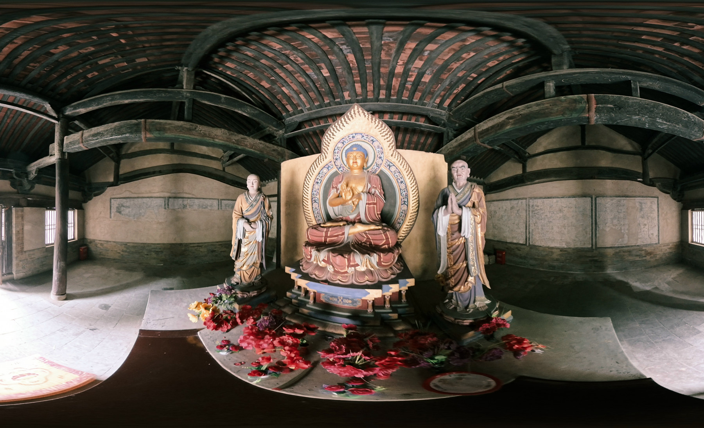
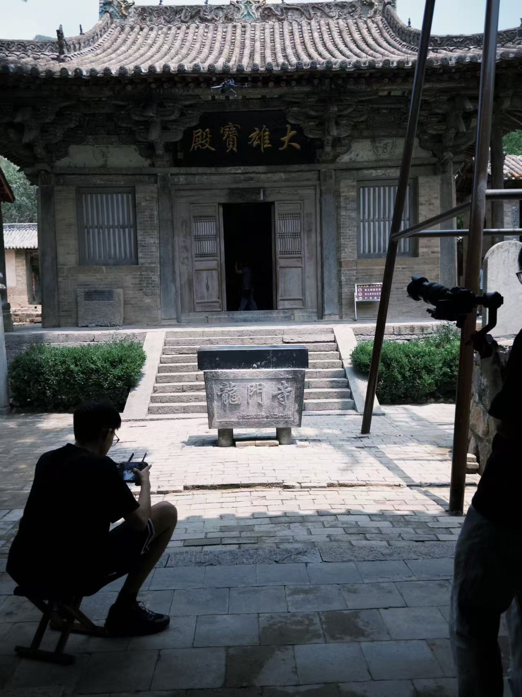

现场笔记
[ 01—02 ]

“
01 / 多路径采集
三次现场考察
项目报告记录了三次龙门寺考察，使用相机扫描、全景扫描与无人机扫描。
整体与细节
整体覆盖与局部采集相结合，重建建筑内外空间。
迭代采集
通过相机对齐与视觉核对发现缺失细节，再回到现场补充采集。

[ 现场 → 影像 ]
;
项目 05 / 长治数字博物馆
龙门寺 [ 11 / 24 ]
[ 影像证据 ]
无人机控制器画面记录航拍过程；全景图像以房间尺度呈现室内空间。
